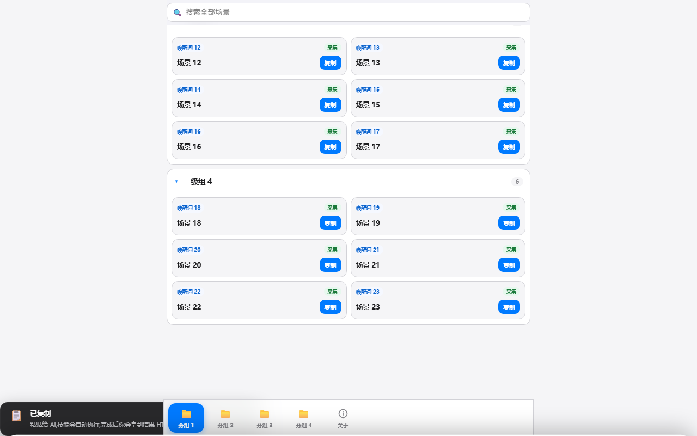
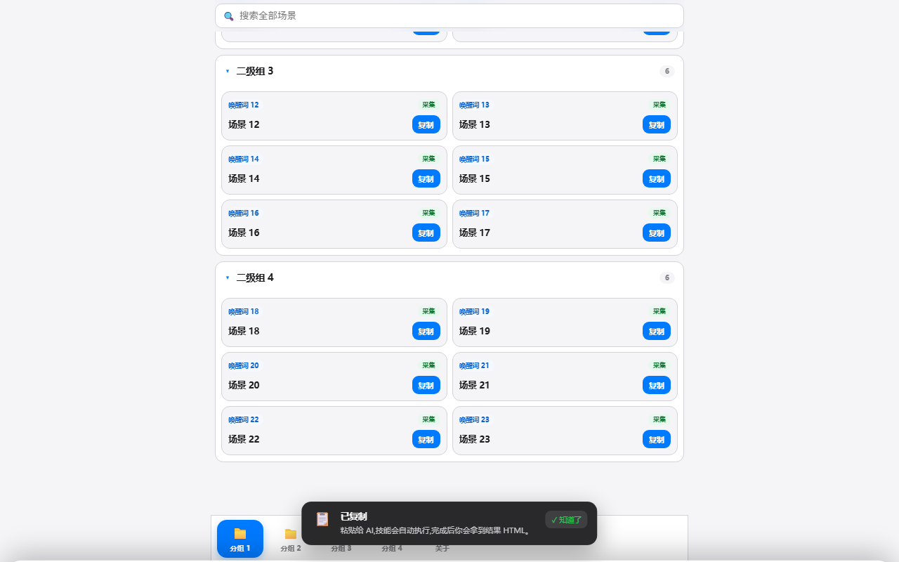

#693 决策简报：HELP 复制按钮不弹提示
一句话：故障已修完并验证通过；下面只有两个决定要你拍板。
一分钟看懂现状
你的 HELP 故障已修 ✅
真浏览器点过，提示悬浮在底部
真浏览器点过，提示悬浮在底部
独立复核通过 ✅
另请一个席位重跑＋挑刺
另请一个席位重跑＋挑刺
仓库流程检查通过 ✅
改了我报表口径之后
改了我报表口径之后
别家的 53 条红测试与我无关 ⚠️
不在 HELP 这条线上
不在 HELP 这条线上
前因后果（为什么会有这一堆事）
故障本身：一行代码
HELP 页面点「复制」后，提示条本该浮在屏幕底部。实际上定位样式按 .hm-toast-stack 这个类名下发，而运行时建这个容器时只写了 id，两边对不上——定位从未生效，提示被排到页面最末尾：短页看不见，长页滚到底只露一点黑边。修法＝补上那个类名（一行），另留一个 id 做兼容。


那"别的东西"是什么
| 三样东西 | 它是什么 | 和这次修复的关系 |
|---|---|---|
| ① 锁 ＋ 账本 ＋ 查账 | 多个 AI 共用同一个文件夹：编译/测试/提交前先排队拿锁；工具顺带记账（票号、命令、成功失败、时间）；有个工具拿我的报告和账本对一遍。 | 只查「你说跑过，是否真跑过、是否绿的」，不查代码对不对。这次判我不过，是因为我圈的时间范围太宽、里面 7 条开发期跑红的没点名。 |
| ② 独立复核 | 按你的要求请另一个席位审这次改动：自己重跑测试、用真 Chrome 量提示的位置、还自造一个变异验证我的测试不是空转。 | 结论通过；它只挑了报告形式问题，同时把①的噪音放大了。 |
| ③ 别人的红测试 | 我跑了一次全仓测试（3405 例，53 条红），只为证明我这行没弄坏别处。 | 无关：53 条没有一条在 HELP / 提示栈这条线上。 |
本次真正改动的文件只有 4 个：共享 HELP 模板 1 行、由它自动生成的两份产物、1 个新测试。其余都是解释与证据文档。
要你拍板的两个决定
决定 1 ｜ 要不要给仓库的「查账规矩」降级，并删掉一条陈旧测试？
这是本次唯一需要你改规则的地方；不改也能过，只是以后每张票你都会再读到今天这种噪音。
为什么会有这条规矩
- 多人（多 AI）同改一个文件夹 → 必须排队拿锁，否则互相踩坏。
- 账本记下每次运行 → 事后能核对「AI 说跑了，是真跑了还是嘴上说说」。
- 查账工具要求：我圈的那段时间里，每一条运行都要在报告里点名，且点名的必须是成功的。干活时跑红很正常（调试、故意变异），这条就变得很折磨人。
| 方案 | 好处 | 代价 / 风险 |
|---|---|---|
| A. 保持原样 | 规矩最紧，能最大限度抓住「马虎」。 | 每张票都要写大量声明；你每次都要读这类噪音；防不了造假（日志和工具同在一台机器上，能改）。 |
| B. 降级（推荐） | 只对账「我明确声明为验收证据」的那几条命令；锁与账本原样保留。你只看到几条关键的，核对方式不变。 | 开发期那些红的运行不再逐条点名（会改为在证据里列一段说明）。风险极低：真正要防的是「声称跑过却没跑」。 |
| C. 删掉整套 | 报告最短。 | 锁一撤，多个 AI 同时编译/提交就会真的互相踩坏文件——不建议。 |
顺带要删的那条陈旧测试
base-render 里有一条测试，一半在断言「备忘录那 6 个页面模板还没按新规矩改」——可另一张票（#665）早已把它们改完了。它现在是把昨天的待办当成今天的规矩，永远红；另一半（6 个模板填完不残留标记）已由备忘录自己的测试逐字覆盖。实测：拿现在盘上的 6 个模板原样直接填 → 6/6 成功、零残留、零报错。
同一组里还有一条「53 个页面填完不残留标记」，要保留——记账家那 16 个页面只有它覆盖。
➡️ 推荐：选 B ＋ 删那条陈旧测试。
理由：省掉的是纯报表工作（你我都受益），留下的是真正防踩坏的锁与账本；风险是"少了一层形式核对"，而那一层本来就防不了造假。
具体动作：改
理由：省掉的是纯报表工作（你我都受益），留下的是真正防踩坏的锁与账本；风险是"少了一层形式核对"，而那一层本来就防不了造假。
具体动作：改
docs/subagent-concurrency-protocol.md 里那两段（查账窗口、报表写法），删 template.test.mjs 里那一条子例；各开一张小票，改完给你看 diff。
决定 2 ｜ 现在验收：点一下那份 HELP，确认手感对不对？
文件已随消息送达：卡路里_HELP_20260918_191530.html（302 KB，真卡路里内容，含修复）。
- 怎么做：打开它 → 点任意卡片上的「复制」按钮 → 看屏幕底部是否出现深色提示条，且不被底部导航栏压住。
- 如果对：票可以关（我会记 100% 并关闭）。
- 如果不对：把机型/浏览器和看到的样子发我，我按真机场景再查一轮。
另外可选：如果你希望「从技能里生成 HELP」也自动带上修复，需要给 base-paint 发一个补丁版本（装在你机器上的那份还是旧的、旧 HELP 文件也不会自己变好）。这属于发版线，本票不做——需要就单独说。
你只要做两件事
- 点开那份 HELP，点一次「复制」，看底部有没有出现提示条。
- 回一句：决定 1 选 A / B / C（推荐 B），以及那条陈旧测试删不删（推荐删）。
展开：本次的判据读数（想核就看，不核也行）
- 新增回归测试 6 条全绿；把修复拿掉再跑 → 红 3 条（证明测试真能抓到），还原后 6 条全绿。
- 仓库流程检查（无任何放宽）：匹配 7/7、无遗漏；源码与产物指纹一致。
- 六家技能共用同一套 HELP 模板：消费面测试 40/40 绿。
- 全仓 3405 例中 53 条红，全部在别家在途的面上；本票的 6 条在全量里同样绿。